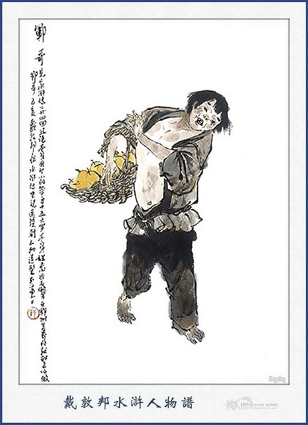
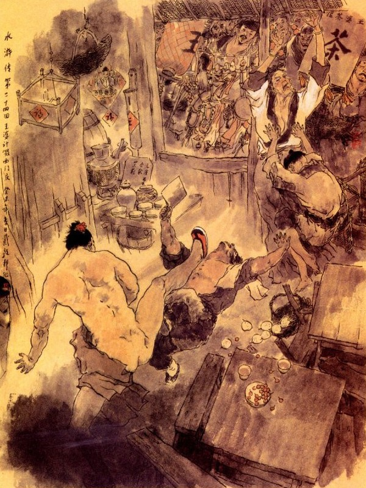
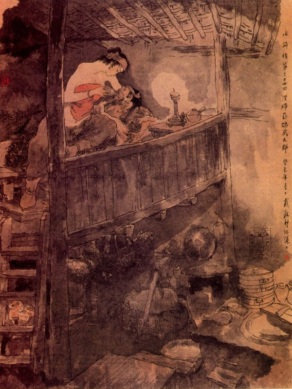

VẬN KHA
Khi đó Vận Kha tức giận xách giỏ đi thẳng tới chỗ Võ Đại bán hàng. Vừa đi tới nơi thấy Võ Đại gánh hàng ở phố kia, mới lại gần kiếm chuyện hỏi đùa rằng:
- Lâu nay không gặp Đại Lang, sao dạo này béo thế?
Võ Đại nói:
- Xưa nay ta vẫn bình dạng như thế này có gì làm béo?
- Hôm nọ ta vẫn tìm lúa ngô mà không đâu có, người ta nói nhà Đại Lang có.
- Nhà ta không nuôi ngan vịt làm gì có thứ ấy?
- Nhà ông không có nuôi ngan vịt thì ông được vợ để cho ăn được béo thế kia?
Võ Đại mắng rằng:
- Đồ khỉ này, vợ tao không đi chim chuột với ai, sao mày dám bảo tao là vịt?
- Phải, vợ ông không chim trai, nhưng có trai chim vợ ông đấy.
Võ Đại lại hỏi rằng:
- Ai đấy! Chú nói anh nghe, anh có biết gì đâu?
Vận Kha nói:
- Tôi nói đùa thế thôi, nhưng có nói ra thực thì cũng ngại, chả lẽ vợ ông như thế mà ông lại không biết hay sao?
Võ Đại nói:
- Chú bảo thực cho anh, tôi xin biếu chú mươi cái bánh.
- Thôi, không cần đến bánh bao, có muốn hỏi đến ai thì mời tôi vào quán uống vài chén rượu, tôi nói khẽ mà nghe.
- Được, chú muốn uống rượu thì theo tôi vào hàng.
Võ Đại quảy gánh cùng Vận Kha vào một quán hàng. Khi đặt gánh xuống vào hàng hai người cùng ngồi, Võ Đại lấy rượu thịt và bóc một vài chiếc bánh bao rồi mời Vận Kha. Vận Kha nói:
- Rượu uống ít thôi, lấy thêm thịt ăn thì tốt.
Võ Đại bảo Vận Kha:
- Chú nói cho tôi biết đi?
- Việc này không thể vội, đợi tôi ăn uống xong đã.
Sau khi ăn xong, Võ Đại hỏi thì Vận Kha nói cho hay rằng:
- Vừa rồi, tôi đem một giỏ quả tuyết lê, tìm Tây Môn Khánh để đòi tiền mà tìm y không thấy, có người bảo ở trong buồng Vương Bà, cùng với vợ Võ Đại dan díu bấy lâu, tôi mới đến đấy cốt để kiếm y mà hỏi tiền nợ, không may bị mụ Vương Bà chó má ấy, không cho vào buồng tìm rồi sinh sự lôi thôi mụ tát tôi mấy cái, mới tức bực mà tìm đến Đại Lang, nếu lúc nãy không kiếm một vài câu nói khích thì ông đâu có chịu hỏi tôi.
- Có thực thế ư?
- Tôi bảo ông là vịt, để cho hai đứa nói vui sướng với nhau mà! Tôi nói thực, ông cứ đến buồng Vương Bà, xem thực hay giả?
- Tôi có biết đâu, vợ tôi vẫn nói là sang Vương Bà khâu vá, khi về thấy má ửng hồng, tôi đã hơi nghi, ai ngờ lại thế, bây giờ tôi gửi hàng đây, để đi bắt gian phu dâm phụ có nên chăng?
- Ông già cả mà không hiểu biết, con mụ chó Vương Bà nó ghê gớm lắm làm sao ông dám ra tay, nó ba người ám hiệu cho nhau, như ông đến nó nom thấy thì họ lẩn ngay thoát được mà Tây Môn Khánh lại thằng côn đồ, nó đánh cho ông mươi cái thì nguy, nếu có kiện thưa, nó có tiền có thế mà ông một mình ở đây thì làm sao, có thể nó giết ông cho khỏi mang tiếng.
Võ Đại nghe nói, liền bảo rằng:
- Phải, chú nói đúng, vậy làm thế nào?
- Tôi bị con mụ Vương Bà chó má ấy đánh còn tức giận đây, hôm nay có lẽ chúng tan rồi, phải rình ngày mai mới được. Vậy chiều nay ông có về nhà thì cứ như mọi ngày, đừng nói năng gì và lộ ra nghi hoặc tức tối rồi ngày mai làm ít hàng thôi, quảy ra chợ bán, tôi ở ngõ hẻm đợi ông, ông đặt gánh hàng ở đó, tôi tới, tôi đến khiêu khích mụ già, cho nó đánh tôi, tôi làm cho giỏ quả rơi ra, ông chạy giả vờ can rồi nhặt hộ, khi ấy, tôi nắm lấy mụ già sinh sự thì ông chạy thộc vào buồng mà bắt lấy gian dâm phụ, kế ấy thế nào?
- Hay quá! Thế mới thực là anh em, tôi có ít tiền đãi chú mang về mua gạo, sáng mai cơm nước xong, đến phổ Tử Thạch đợi tôi để làm việc ấy.
Vận Kha nhận tiền và mấy cái bánh rồi về, Võ Đại trả tiền rượu, đi bán bánh một lúc nữa về nhà. Nói đến vợ Võ Đại bấy lâu nay khinh miệt chồng thì cũng biết rằng không phải, nay đã khá hơn trước ít nhiều, khi thấy Võ Đại về cũng vui vẻ như mọi ngày, thấy chồng có dáng uống rượu thì hỏi rằng:
- Đại Lang hôm nay uống rượu ở đâu hẳn?
- Có, gặp mấy người quen uống ở hàng mấy chén với nhau thôi.
Người vợ lại bày rượu cơm cùng chồng ăn uống, đêm hôm ấy Võ Đại không giở đến việc nghi ngờ. Sáng ra Võ Đại chỉ làm ít bánh rồi gánh đi bán, người vợ bấy lâu chỉ mãi mê với trai, có biết đâu làm ít hay nhiều, đợi chồng đi khỏi, lại lẻn cửa sau sang buồng bợm già để đợi tình nhân. Võ Đại quảy gánh ra ngõ hẻm, đón Vận Kha rồi hỏi:
- Thế nào, chú thấy nó đến chưa?
- Nó chưa đến, ông hãy đi bán hàng một lát đã. Rồi ông đến bên tả ngõ hẻm này đợi tôi.
Võ Đại quảy hàng đi bán một lúc rồi trở lại; Vận Kha bảo Võ Đại:
- Bây giờ chúng nói với nhau rồi, để tôi mang giỏ quả đến khiêu chiến Vương Bà rồi thi hành kế.
Võ Đại y lời gánh hàng gửi một chỗ rồi ra rình ở một nơi. Vận Kha đem giỏ đến hàng Vương Bà rồi mắng rằng:
- Con mụ già chó má kia! Sao hôm qua mày đánh tao.
Vương Bà chợt thấy Vận Kha lại đến mắng chửi, liền uất khí xông lên, chạy ra nắm lấy Vận Kha mà đánh, mắng luôn:
- Ranh con! Tao với mày không có chuyện gì, sao lại cứ đến đây chửi bởi?
- Tao chửi mày là đồ sọm già với tính chó má đấy!
Vương Bà tức quá nắm lấy mà đánh làm Vận Kha tung cái giỏ ra rồi Vận Kha kêu to lên. Hai bên ẩu đả nhau ấm ỹ thì chợt thấy Võ Đại sắn quần áo ở đâu chạy thẳng vào buồng. Vương Bà định bỏ ranh con ra, để chạy lại ngăn Võ Đại, nhưng ranh con nắm chặt lấy không buông, Vương Bà chỉ còn cách kêu lên "Võ Đại đến" làm cho người vợ nghe thấy vội vàng chạy ra đóng chặt cửa lại. Tây Môn Khánh chui xuống gầm giường để trốn.
Võ Đại đấm phá cửa buồng không nổi, miệng kêu gào lên "Gian phu dâm phụ". Người vợ nói ra:
- Bấy lâu múa mỏ khoe tài, bây giờ mới biết là đồ hổ giấy, ai sợ chi ngươi!
Người vợ nói câu này, có ý bảo Tây Môn Khánh ra đánh Võ Đại, cướp đường mà chạy. Tây Môn Khánh nằm ở gầm giường nghe chị chàng nói thì hiểu ý ngay, liền đâm choàng chạy ra mở tung cánh cửa mà nói rằng:
- Đứa nào dám đánh ta?

Võ Đại thấy vậy, vừa toan nắm lấy Tây Môn Khánh thì bị Tây Môn Khánh giơ chân trái đá cho một cái vào bụng, ngã lật ra đằng sau rồi rảo bước chạy cút thẳng một mạch về nhà. Vận Kha thấy Võ Đại bị ngã, Tây Môn Khánh chạy mất, bèn bỏ Vương Bà mà chạy nốt. Bấy giờ phố sá đổ ra xem thì thấy Tây Môn Khánh đã trốn rồi, nên không ai nói năng gì đến nữa. Vương Bà thấy Vận Kha buông tha ra, liền chạy vào trong buồng, thấy Võ Đại mồm mép chảy máu ra lênh láng mà nét mặt xám hẳn lại, liền gọi chị chàng kia ra lấy nước lạnh rửa sạch rồi vực theo ngõ hẻm về nhà, đưa lên gác nằm đó.
Ngày hôm sau Tây Môn Khánh dò là tin tức, thấy không động chạm gì thưa kiện thì lại điềm nhiên đi lại như cũ. Còn Võ Đại thì một mình ốm đau nằm ở trên giường, tới bốn năm ngày vẫn chưa dậy được, nước uống không có nước mà vợ không thèm đếm xỉa đến, chỉ sáng nào cũng phấn sáp chỉnh đốn quần áo đi mãi đến chiều, khi về thì lại hai má đỏ hồng, rõ ra một tuồng dâm đãng. Võ Đại thấy vậy thì cay đắng trong lòng mà không biết làm sao được. Một hôm chàng gọi vợ đến mà bảo rằng:
- Công chuyện của các ngươi làm ta biết cả rồi, ta định bắt đứa gian tặc kia, ai ngờ ngươi lại hùa với nó mà đánh ta sống giở chết giở thế này mà ngươi cứ hú hí vui đùa với nhau. Ta ngày nay dẫu chết cũng không làm gì, song còn em ta là Võ Nhị thì các ngươi đã biết, nó không phải tay vừa, nếu nay mai nó về đây, tất sinh sự lôi thôi, không thể nào im được. Vậy các ngươi tử tế trông nom cho ta thì khi hắn về ta sẽ ngơ cho, bằng không thì bấy giờ ta sẽ liệu.
Chị chàng nghe vậy không nói năng chi cả, cứ lẳng lặng đi sang bên cạnh mà thuật lại cho Vương Bà, Tây Môn Khánh biết.
Tây Môn Khánh nghe vậy thì dậm chân xuống đất mà kêu lên rằng:
- Trời ơi, nếu vậy thì biết làm thế nào? Ta phải biết rằng Võ Đô Đầu đánh hổ núi Cảnh Dương là một tay đệ nhất hảo hán ở Huyện Thanh Hà, nếu mình chạm vía với lão ấy thì còn sống thế nào được? Cái ân ái của đôi ta đến quãng này thực là khó nghĩ, không lẽ nào cho đành. Vậy còn biết làm sao cho được?
Vương Bà nghe nói thì cười nhạt mà rằng:
- Tôi chưa từng thấy một người đẩy thuyền như tôi đây còn chưa sợ mà một người cầm lái như cậu đã cuống chân tay như thế bao giờ! Tôi thực là làm một thằng con trai, nhưng đến những lúc này thì thực không có cách gì gỡ cho ra được, chẳng hay bà có kế gì không?
- Các người định làm vợ chồng lâu hay làm vợ chồng ngắn?
- Thế nào là vợ chồng lâu, thế nào là vợ chồng ngắn?
- Nếu làm vợ chồng ngắn thì bắt đầu từ hôm nay hãy rẽ duyên đi đôi ngả, đợi khi Võ Đại yếu dậy sẽ nói lại với hắn thì Võ Nhị về đây tất cũng im chuyện rồi sau này nếu khi Võ Nhị có đi việc quan đâu thì bấy giờ lại xum họp cùng nhau, thế là gọn nhất. Bằng muốn làm vợ chồng lâu mà cùng nhau sống mãi mãi không còn sợ đến điều chi thì tôi có một kế sách này, nhưng cũng khó lòng bảo cho các người được.
- Vâng, xin bà hết sức che chở mà bảo cho chúng tôi lấy cách lâu dài với nhau.
- Cái kế sách này cần dùng đến một vật, giá mọi nhà thì không có, nhưng giời xui khiến vậy nhà cậu lại sẵn rồi.
- Cần có vật gì, hay là bà bảo tôi khoét mắt đưa cho bà chăng?
- Hiện bây giờ lão ấy đương đau yếu ta nên thừa cơ mà hạ thủ ngay mới được. Cậu về lấy một miếng tì sương đem đến đây cho nương tử mua một liều thuốc đau bụng về cho lão uống, đến khi chết rồi thì ta đem đốt đi thế là hết tích. Sau này Võ Nhị có về đến đây thì chị dâu với em chồng có phép nào mà tra hỏi được, bấy giờ cũng đành chịu thôi chứ gì? Đoạn rồi ta cứ đi lại kín đáo với nhau, đợi khi hết tang thì sẽ cưới về, như thế há không phải một kế trăm năm bền vững hay sao?
- Bà ôi! Nếu vậy thì tội nghiệp lắm! Nhưng mà không làm thế nào cũng được.
- Cậu phải biết rằng: Giẫy cỏ phải trừ gốc, nếu không cẩn thận thì tất là khổ về sau, cậu phải về mau lấy đem đến đây, để tôi bảo nương tử hạ thủ rồi khi thành công phải đền ơn tôi mới được.
Độc thay tâm địa đàn bà,
Mưu kia thế nọ chẳng qua vì tiền.
Xét xoi chăng hỡi Hoàng Thiên?
Sinh chi những giống đảo điên khổ đời.
Bấy giờ ma ngũ sắc đương ám ảnh mê hồn làm cho Tây Môn Khánh mất cả tâm thần trí tuệ, không còn trông trước trông sau chi nữa, bèn lập tức đi mau về nhà mà lấy ngay thuốc độc đem đến đưa cho Vương Bà. Vương Bà cầm lấy thuốc độc rồi bảo chị chàng kia rằng:
- Vừa rồi Võ Đại bảo nàng nên trông nom tử tế thì sau này không nói với Võ Nhị nữa, vậy bây giờ nàng nên nhân câu ấy mà làm ra mặt thương yêu hối hận để phục dịch anh ta. Nếu anh ta có đòi uống thuốc thì nàng pha một chút tỳ sương này vào thuốc đau bụng mà đổ cho anh ta uống; rồi chạy lánh đi một chỗ. Đến khi nào thuốc ngấm làm cho đứt ruột đứt gan mà anh ta kêu lên thì nàng sẽ đem chăn vào đắp kín cho hắn mà phải cẩn thận vững vàng chớ cho ai nghe tiếng mới được. Đoạn rồi đun sẵn một nồi nước nóng và lấy một khăn lau để đó, hễ khi anh ta chết rồi thì thất khiến phải chảy máu tươi, bấy giờ nàng sẽ bỏ chăn ra mà lấy giẻ sấp nước nóng, lau kỹ đi một lượt rồi sau sẽ khâm liệm bỏ vào áo quan mà khiêng đi thiêu hóa là xong. Chị chàng kia ung dung đáp rằng:
- Làm thế thì tốt lắm nhưng tay chân tôi mềm yếu, không biết rằng có thi hành nổi hay không?
Vương Bà nói:
- Cái đó thì khó gì? Bấy giờ nàng sẽ gọi cửa đây rồi tôi sang giúp cho.
Tây Môn Khánh lấy làm đắc sách, bảo hai người rằng:
- Các bà phải làm ăn cho cẩn thận rồi sáng mai tôi sẽ đến đây xem sao?
Nói xong từ biệt mà về. Bấy giờ Vương Bà mài tỳ sương nhỏ biến ra rồi bọc lại cẩn thận cho chị chàng kia. Chị chàng ta giắt thuốc vào mình rồi trở về nhà, bèn đến chỗ Võ Đại nằm, thấy Võ Đại đã mê mệt lờ đờ như người sắp chết, nàng liền giả cách ra chiều thương xót mà khóc òa lên. Võ Đại thấy vậy, hỏi rằng:
- Làm sao mà nàng khóc?
Chị chàng lau nước mắt đáp rằng:
- Tôi trót dại bị người ta lừa dối để đến nỗi chàng phải chịu thiệt thòi như thế, thực trong lòng hối hận vô cùng. Nay tôi tìm được một nơi thuốc hay, nhưng chỉ sợ chàng còn nghi ngại, nên không dám đem về đưa chàng uống.
Võ Đại rên rỉ mà rằng:
- Nếu nàng cứu được cho ta khỏi thì ta không còn chấp chi những chuyện trước mà cũng không khi nào nói với Võ Nhị. Nàng cứ lấy thuốc về đây cho ta uống.
Chị chàng nghe nói vội vàng lấy ít tiền chạy sang nhà Vương Bà ngồi, bảo Vương Bà mua cho một liều thuốc đau bụng rồi xăm xăm đưa về cho Võ Đại xem mà nói rằng:
- Đây thứ thuốc đau ruột, thầy thuốc dặn đến nửa đêm uống rồi lấy chăn đắp kín mít cho toát mồ hôi ra là sáng ngày khỏi.
Võ Đại gật đầu khen rằng:
- Nếu vậy thì tốt lắm, đêm nay nàng phải tỉnh ngủ mà cho tôi uống mới được.
Bấy giờ trời đã tối mịt, chị chàng kia thắp ngọn đèn lên để đó rồi bắc nồi nước lã lên lò rồi bỏ một cái khăn lay vào đó đun sẵn cho nóng. Đến đầu trống canh ba, chị chàng bỏ thuốc độc vào chén rồi múc một chén nước lã lên hỏi Võ Đại lấy thuốc đau bụng mà hòa lẫn vào đó rồi đổ cho Võ Đại uống. Võ Đại uống được một hớp rồi bảo với vợ rằng:
- Sao thuốc này khó uống quá?
Chị chàng kia đáp rằng:
- Sao cho khỏi bệnh là hơn, cần gì khó uống.

Nói xong lại nâng chén thuốc đổ cho Võ Đại, Võ Đại vừa há mồm ra thì chị chàng cầm cả thuốc đổ dốc vào cuống họng rồi để nằm vật xuống đó mà vội vàng đứng dậy chạy ra. Được một lát thì Võ Đại kêu lên một tiếng "Oái trời ôi!” rồi nói lên rằng:
- Nàng ơi sao uống thuốc vào, lại đau ruột quá lên thế?
Chị chàng thấy kêu như vậy, liền chạy đến kéo chăn lên mà đắp trùm cả đầu đuôi cho rõ kín. Võ Đại lại kêu lên rằng:
- Hơi tức lắm không sao chịu được.
Chị chàng đứng bên cạnh đáp rằng:
- Thầy thuốc dặn phải thế mới ra được mồ hôi. Nói đoạn lại sợ Võ Đại cựa dậy, liền nhảy lên trên mình Võ Đại mà giữ chặt lấy bốn đầu chăn làm cho anh kia không sao mà cựa được. Võ Đại nằm trong chăn kêu lên một tiếng, thở hộc lên mấy hơi nữa rồi ruột xé gan bào, phút chốc đã hồn về chín suối.
Thương ôi!
Vì đâu đạo nghĩa tan tành,
Càng trông thế thái nhân tình càng cay!
Mênh mang trời rộng đất dầy,
Nộc tình giết hại xưa nay bao người?
Căm gan muốn đập kêu trời,
Bày chi tai mắt cho đời oái oăm?
Khi ấy chị chàng đốn mạt kia mở chăn ra, thấy Võ Đại đã nằm chết ra thẳng đuỗn, nghiến hai hàm răng làm một mà trong thất khiếu đều chảy máu tươi ra, nàng liền nhảy xuống giường rồi chạy xuống gác đi ra cửa sau lên tiếng đằng hắng cho Vương Bà biết. Vương Bà nghe tiếng, liền chạy ra hỏi rằng:
- Đã xong chưa?
- Xong rồi, nhưng chân tay mềm yếu, không làm sao thi thố được.
- Có khó gì, để tôi sang giúp cho.
Nói đoạn liến xắn áo đi sang, bưng nồi nước nóng lên gác, cuốn chăn lại mà lau sạch máu me cho Võ Đại rồi khiêng xuống dưới gác, lấy áo xiêm khăn giấy mặc cho Võ Đại tử tế, đặt lên giường nằm, lấy mảnh giấy phủ trên mặt và lấy cái khăn sạch sẽ đắp lên cho chàng. Đoạn rồi hai người lại lên trên gác dọn dẹp gọn gàng đâu đấy rồi Vương Bà trở về nhà yên nghỉ, chị chàng kia vờ vĩnh khóc cho đến sáng. Vào khoảng đầu trống canh năm, Tây Môn Khánh đã bò đến nhà Vương Bà để dò hỏi tin tức, Vương Bà liền đem đầu đuôi mọi chuyện thuật lại cho chàng nghe rồi chàng đưa tiền cho Vương Bà, để mua sắm quan khách cùng các đồ tống táng. Bấy giờ Vương Bà gọi chị chàng độc ác kia sang để bày chuyện. Chị chàng kia nói với Tây Môn Khánh rằng:
- Bây giờ Võ Đại đã chết rồi, còn thân tôi đây hoàn toàn trông cậy vào cậu cả đấy.
Tây Môn Khánh nói:
- Cái đó tất nhiên, nàng không cần phải nói.
Vương Bà nói rằng:
- Bây giờ có một việc rất cần là tên Đoàn Cầu Hà Cửu Thúc, vốn là người sắc sảo xưa nay, nếu lỡ ra nó biết mà nó không chịu khâm liệm cho thì bấy giỡ sẽ làm ra sao?
Tây Môn Khánh nói:
- Việc đó để tôi bảo hắn, tất là phải nghe lời.
Vương Bà nói:
- Nếu vậy thì cậu phải đi ngay mới được.
Tây Môn Khánh nhận lời rồi đi ngay. Bấy giờ trời đã sáng tỏ, Vương Bà đi mua quan quách cùng các thức vàng hương đem về cho chị chàng kia. Đoạn rồi phố sá đôi bên đổ đến thăm viếng thì chị chàng ta lại giả vờ khóc lóc làm ra bộ thương xót vô cùng. Phố sá có hỏi đến bệnh tật gì, vì sao mà chết thì chị chàng đáp rằng:
- Chỉ vì chứng đau bụng chữa mãi không khỏi rồi sau càng ngày càng nặng mà không sao cứu được nữa.
Chị chàng nói xong, lại làm bộ khóc váng cả nhà lên. Đám phố sá thấy vậy, ai cũng biết là Võ Đại chết oan, song không có việc gì can thiệp đến ai, nên cũng làm ngơ mặc đó mà khuyên giải mấy câu cho xong chuyện rồi ai về nhà nấy. Vương Bà cho đi mời Hà Cửu Thúc về để khâm liệm và đón hai vị sư về để làm độ vong. Bấy giờ Hà Cửu Thúc được tin mời, liền sai bọn đầy tớ đi trước đến để sắp sửa đồ đạc rồi mình lững thững đi sau. Khi tới đầu phố Tử Thạch bỗng gặp Tây Môn Khánh gọi mà bảo rằng:
- Hà Cửu Thúc đi đâu bây giờ đấy.
Hà Cửu Thúc đáp:
- Tôi đến khâm liệm cho Võ Đại Lang ở trong phố đây.
- Hãy đến đây tôi nói câu chuyện này đã.
Tây Môn Khánh nói xong, bèn dắt Cửu Thúc vào một hàng rượu ở gần góc phố đó rồi mời vào nói chuyện. Hà Cửu Thúc chối từ rằng:
- Chúng tôi đâu dám ngồi với ngài như thế.
Tây Môn Khánh nói:
- Cần chi Cửu Thúc phải khiêm tốn như thế, hãy cứ ngồi đây tôi nói chuyện.
Nói đoạn hai người cùng ngồi xuống rồi gọi nhà hàng đem rượu cùng hoa quả thức ăn lên mời Cửu Thúc cùng uống. Cửu Thúc nghĩ thầm trong bụng: "Anh chàng này có ăn uống với mình bao giờ, cái này tất lại có chuyện rắc rối gì đây?” Nghĩ đoạn hai người cùng uống rượu với nhau. Một lát Tây Môn Khánh lấy 10 lạng bạc ra để bàn, bảo Hà Cửu Thúc rằng:
- Cái này Cửu Thúc hãy nhận lấy cho rồi sau đây tôi xin đưa tạ ơn nữa.
Hà Cửu Thúc chấp tay đáp rằng:
- Chúng tôi không có công lao gì, lẽ đâu nhận tiền của ngài, vả chăng ngài có sai bảo gì, chúng tôi cũng không dám thế.
- Không, Cửu Thúc cứ cầm lấy rồi tôi nói chuyện.
- Vâng, xin ngài hãy cứ nói, thế nào chúng tôi cũng xin vâng.
- Tôi chỉ có một việc là lát nữa Cửu Thúc khâm liệm cho Võ Đại thì Cửu Thúc che đậy mà kín đáo giúp cho thì tôi cảm ơn lắm.
- Việc ấy tầm thường lắm, có chi tôi dám nhận tiền.
- Nếu không nhận tiền là Cửu Thúc không chịu giúp tôi rồi, xin cứ lấy cho.
Hà Cửu Thúc vốn xưa nay sợ Tây Môn Khánh là tay gian hoạt, hay đi lại với đám quan tư mà bắt nạt đám dân gian, nên bất đắc dĩ phải nhận lấy rồi cáo từ mà ra đi.
Khi bước chân ra khỏi cửa, Tây Môn Khánh lại dặn với rằng:
- Cửu Thúc nhớ chớ để tiết lộ mới được rồi sau sẽ tạ ơn.
Cửu Thúc vâng lời rồi chia tay mỗi người mỗi ngả. Hà Cửu Thúc vừa đi vừa nghĩ lẩm nhẩm: "Quái lạ, ta liệm cho Võ Đại thì việc gì đến anh chàng này mà lại cho nhiều tiền như thế? Chẳng hay ở trong lại có điều chi rắc rối đó chăng?”
Chàng nghĩ vậy thì trong bụng lấy làm nghi hoặc vô cùng, khi tới trước cửa nhà Võ Đại, đã thấy những đầy tớ đứng đợi ở đó. Cửu Thúc hỏi rằng:
- Võ Đại chết về bệnh gì thế?
Lũ đầy tớ nói rằng:
- Chúng tôi thấy người nhà nói là bị đau bụng mà chết.
Hà Cửu Thúc nghe đoạn, vén bức rèm bước vào thấy Vương Bà đón mà nói rằng:
- Sao Hà Cửu Thúc đến chậm thế?
Hà Cửu Thúc đáp:
- Tôi bận có tí việc, nên chậm một chút.
Bấy giờ vợ Võ Đại cũng giả vờ mặc áo xiêm trắng, khóc từ trong nhà mà đi ra. Hà Cửu Thúc liền nói rằng:
- Thôi, nương tử khóc làm gì nữa? Tội nghiệp! Đại Lang mất thế mà tôi không biết gì cả.
Chị chàng lại bưng vờ lên mặt mà nói rằng:
- Khốn nạn Đại Lang nhà tôi chỉ đau bụng có năm ba hôm mà thiệt mạng, thực là cay đắng cho tôi lắm.
Cửu Thúc nhìn kỹ chị chàng một lượt rồi tự nói một mình rằng: "Xưa nay chỉ nghe tiếng Võ Đại nương tử là đẹp, nay mới biết được rõ người như thế, cái mười lạng bạc của anh chàng Tây Môn Khánh này, tất là có duyên cớ chi đây!” Nghĩ đoạn chạy vào chỗ xác Võ Đại nằm, cất cành phan lên, mở tờ giấy phủ mặt ra rồi dùng hai con mắt thần trong suốt như bảo ngọc mà định tình nhìn kỹ vào mặt Võ Đại. Đoạn rồi bỗng dưng kêu lên một tiếng ngã vật ra đằng sau, miệng hộc máu ra; năm đầu ngón tay tím lại, nét mặt tái nhợt đi mà hai con mắt lờ đờ như người sắp chết vậy. Cả nhà thấy vậy, ai nấy đều kinh ngạc, không hiểu ra ý làm sao. Than ơi!
Máu tình pha lẫn tỏi tanh,
Lấy ai cứu vớt phù sinh cho đời?
Bắc thang lên hỏi ông trời,
Thuốc đâu chữa được con người táng tâm?
Đường nhân lối nghĩa âm thầm,
Nghe như nước réo non gầm đâu đây?
Giấc tình một tỉnh mười say,
Tiền nhân hậu quả sau này xem sao?
Lời bàn của Thánh Thán
Hồi này kết lại hồi trên tả Tây Môn, Phan Thị gian dâm, để này ra hồi sau Võ Nhị báo thù cũng là văn tự tả qua, song từng chỗ đều tả ra tinh tế, chứ không tả sơ sài, dù không phải là văn chính truyện.
Đoạn thứ nhất tả Vận Kha định kế, đoạn thứ hai tả Võ Đại bắt gian, đoạn thứ ba tả Vương Bà giúp sức, đoạn thứ tư tả dâm phụ giết chồng, đến đoạn cuối tả Cửu Thúc suy nghĩ, tinh thần từng đoạn, xuất sắc từng việc, đừng cho là hồi nhỏ coi thường. Tả tâm độc của gái đĩ, mấy lần toan gấp sách không xem, muốn chóng đến hồi sau xem báo thù cho khoái, như đánh trống mà tẩy uế đi.